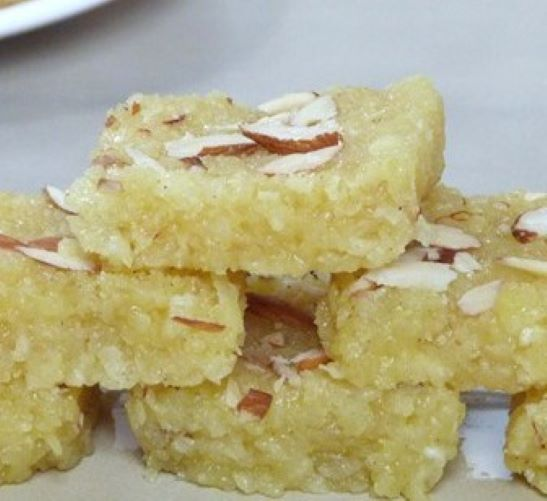

ટોપરા પાક

સમગ્રીઓ
|
| દૂધ |
| માવા |
| તાજા છીણેલા નાળિયેર |
| ખાંડ, |
બનાવવા ની રીત
1) 8x8 ઇંચના તવાને ઘીથી ગ્રીસ કરો અને તેને બાજુ પર રાખો.
2) એક નાના બાઉલમાં કેસર અને 1 ટેબલસ્પૂન દૂધ લો. તેને માઇક્રોવેવમાં થોડી સેકન્ડ માટે ગરમ કરો. અને પછી તમારી તર્જની અને અંગૂઠાની વચ્ચે કેસર ઘસો. તેથી તે એક સરસ પીળો રંગ આપે છે. જરૂર પડે ત્યાં સુધી તેને બાજુ પર રાખો.
કેસર દૂધમાં ઓગળી જાય છે
3) એક પેનમાં નારિયેળ, ખાંડ અને દૂધ લો.
એક તપેલીમાં તાજુ નાળિયેર, દૂધ, ખાંડ
4) સારી રીતે મિક્સ કરો. અને મધ્યમ તાપ ચાલુ કરો.
મિશ્રણ મિક્સ કરો અને રાંધો
5) ખાંડ પીગળી જાય એટલે મિશ્રણ વહેતું થઈ જાય. તેને સતત હલાવતા રહીને 15-17 મિનિટ સુધી પકાવો.
ખાંડ ઓગળે છે અને મિશ્રણ વહેતું બને છે
6) બધા પ્રવાહી બાષ્પીભવન થાય ત્યાં સુધી તેને રાંધો.
નાળિયેરનું મિશ્રણ સૂકાય ત્યાં સુધી રાંધવામાં આવે છે
7) પછી તેમાં કેસર-દૂધનું મિશ્રણ, એલચી પાવડર અને ખોવા ઉમેરો.
ખોવા, કેસર દૂધ અને એલચી પાવડર ઉમેરો
8) સારી રીતે મિક્સ કરો.
મિશ્રણને મિક્સ કરો અને રાંધવા
9) તેને સતત હલાવતા રહીને 10 મિનિટ સુધી પકાવો. જ્યારે તે થઈ જાય ત્યારે તે ચીકણું, સૂકું અને ગઠ્ઠું દેખાવું જોઈએ.
કોપરાપાકનું મિશ્રણ તૈયાર છે
10) ગ્રીસ કરેલ તપેલીમાં સ્થાનાંતરિત કરો અને તેને સમાનરૂપે ફેલાવો. તેના ઉપર કાતરી બદામ અથવા પિસ્તા નાંખો. બદામને થોડું દબાવો જેથી તે બરફી પર ચોંટી જાય.
કોપરાપાકના મિશ્રણને ગ્રીસ કરેલી ટ્રેમાં ફેલાવો
11) તેને સંપૂર્ણપણે ઠંડુ થવા દો. પછી તેને 16 સરખા ટુકડામાં વહેંચો.
ટુકડાઓમાં કાપો
12) તેને તોડ્યા વિના હળવા હાથે પેનમાંથી કાઢી લો.